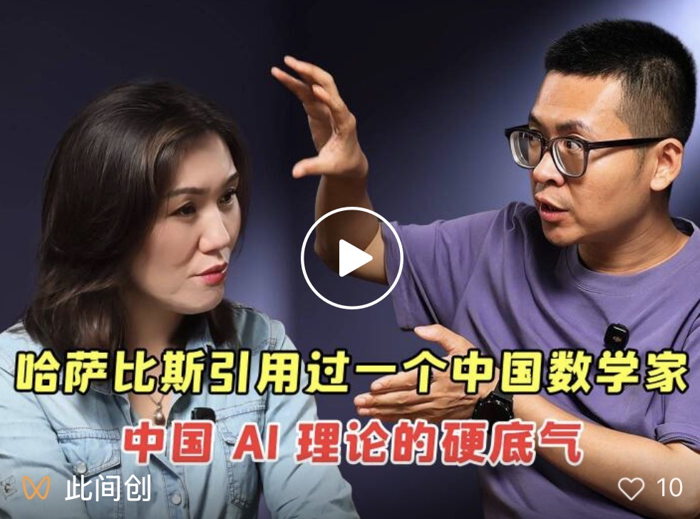

OPC, AI & GEO: How a New Field Takes Shape
September 2026 · 此间创 (WeChat)

In a long-form 此间创 interview, Fuyu Think Tank co-founder Chang Yunlei maps exactly where OPC stands today — still in its "cognitive calibration" phase — and explains why GEO is really a long-term knowledge project, not a quick SEO-style fix. He closes with a question every founder in an unformed field faces: how do you find your ecological niche?
Chang Yunlei, co-founder of Fuyu Think Tank, describes how any new domain matures through three phases — cognitive calibration, then "a hundred flowers", then a settled structure. He places OPC at the end of that first phase: by the end of the year, the methodological playbooks and proven examples should begin to emerge. Because OPC is a deliberately narrow, vertically-focused category, its logic prizes depth and outsize margin over raw scale.
On content, he argues that video stirs emotion while long-form text carries thinking depth — and that in an AI-search era, the weight of written text as an interaction medium is rising again. That leads into GEO (generative engine optimization), which he insists is a long-term, sustained knowledge engineering effort: authoritative sources, clear structure, first-hand experience, and consistent, frequent publishing. He notes that Moon Bay OPC community is discoverable to AI search engines because it has been repeatedly and credibly described by national and local media.
His final idea is "ecological niche" — structure decides position, position decides relationships, and your niche decides your traffic. For founders entering OPC, where no standard answer yet exists, the winning move is not to chase what everyone else is doing, but to find the empty position nobody has filled yet.